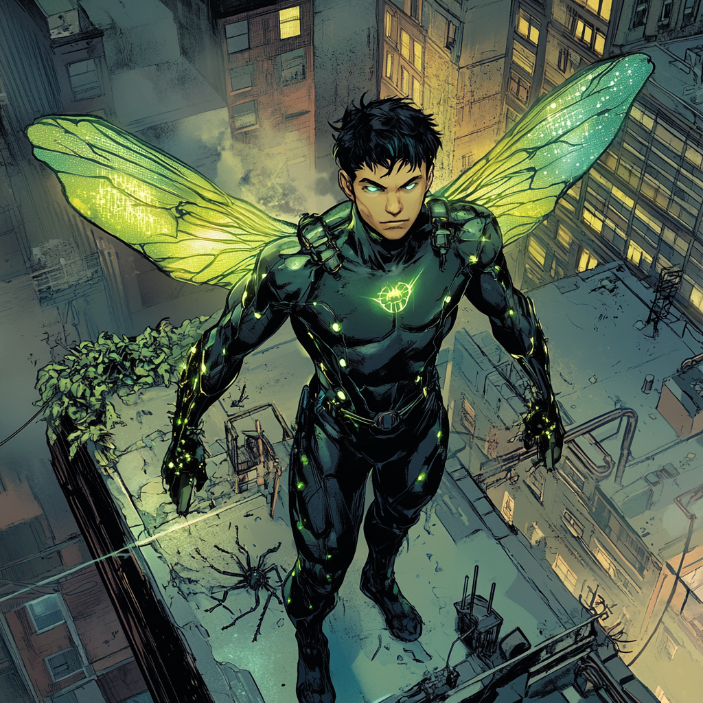

Mandible: Evolution of an Urban Entomologist

The Scientific Path
Janos Nagy grew up in a modest apartment in Boston's Allston
neighborhood, the son of Hungarian immigrants who fled
during the 1956 revolution. From his earliest days, he
displayed an unusual fascination with insects, spending
hours observing ants on the sidewalk and collecting
specimens in jars. His father, a former university professor
who now worked as a janitor at MIT, encouraged this
scientific curiosity, helping him build a makeshift
laboratory in their apartment's spare room.
Through a scholarship program, Janos attended Boston Latin School, where his aptitude for biology earned him recognition. His high school mentor, Dr. Margaret Wu, recognized his potential and introduced him to the world of professional entomology. Under her guidance, he conducted his first formal research project on urban ant colonies, winning the state science fair.
Academia and Accident
Janos's work earned him a full scholarship to MIT, where he
double-majored in biology and chemistry. His undergraduate
thesis on venom synthesis in arthropods caught the attention
of Harvard's entomology department. Dr. Wu, now Dean of
Entomology, recruited him directly into their PhD program.
In his second year of graduate studies, Janos led a groundbreaking project studying toxic secretions in a newly discovered species of cave-dwelling arthropod. During a late-night experiment, a containment failure exposed him to a combination of experimental enzyme catalysts and concentrated venom samples.
The accident activated his dormant X-gene. Over several painful hours, Janos's body underwent dramatic changes at the cellular level. He discovered he could shrink to insect size, generate toxic compounds, and eventually even fly. The transformation terrified him initially, leading to weeks of isolation in his apartment.
Mentorship and Control
Dr. Wu proved instrumental in helping Janos cope with his
transformation. Having secretly researched mutant biology
for years, she understood the implications of his change.
She helped him document and study his abilities from a
scientific perspective, treating them as an extension of his
research rather than a curse.
His powers continued to develop. He gained precise control over his size changes, mastered flight through bio-mechanical wing generation, and learned to synthesize and direct various toxins. His enhanced agility and reflexes made him surprisingly effective at avoiding danger.
The turning point came during a laboratory crisis. A newly-developed insecticide threatened to create a deadly chain reaction in the ventilation system. Janos used his abilities to shrink down, navigate the ducts, and neutralize the compound with his own biochemically generated antitoxins. The experience showed him his powers could serve a greater purpose.
The Hero's Path
Janos's actions caught the attention of Falcon, who had been
investigating a series of prevented laboratory accidents in
the Cambridge area. After observing him use his abilities to
stop several dangerous chemical spills, Falcon recognized
the potential in his precise control and scientific
approach. He approached Janos about joining the Boston
Avengers Academy, seeing in him the same methodical mindset
that had served Sam Wilson well in his own transition from
soldier to superhero.
Initially reluctant to abandon his academic career, Janos found unexpected support from Dr. Wu. She helped him arrange a modified research schedule that allowed him to continue his studies while training at BAA. He adopted the codename "Mandible," acknowledging both his powers and his scientific background.
Team Integration
At BAA, Janos discovered his powers complemented his
teammates' abilities in unexpected ways. His shrinking
ability and flight made him an excellent scout, while his
toxin control provided unique tactical options. His
scientific background helped bridge the gap between the
team's more academic and practical members.
He formed a particular bond with Storm Weaver, finding common ground in their scientific approaches to heroism. His ability to analyze problems at microscopic levels proved invaluable during joint operations with TitanPrime, while Mistwalker helped him master stealth applications of his powers.
Present Day
Janos continues to balance his roles as scientist and
superhero, maintaining his research position at Harvard
while training with BAA. Dr. Wu serves as both his academic
advisor and superhero mentor, helping him explore the
scientific implications of his powers while guiding his
growth as a hero.
He lives in the BAA dormitories but frequently returns to his old neighborhood, using his abilities to protect the community that shaped him. His parents' store has become an unofficial safe house, with his mother leaving out food for him during late-night patrols, never directly acknowledging but quietly supporting his new path.
The scientific community remains unaware that one of their promising young researchers spends his nights as a superhero. Janos works to protect both worlds, believing his understanding of biology and chemistry makes him uniquely suited to handle threats at all scales, from microscopic to massive.
His greatest ongoing challenge is reconciling his methodical, scientific nature with the often chaotic reality of superheroism. Yet with each mission, he finds new ways to apply his powers and knowledge in service of others, evolving from a purely academic researcher into something far more impactful: a hero who can literally see the biggest problems from the smallest perspectives.